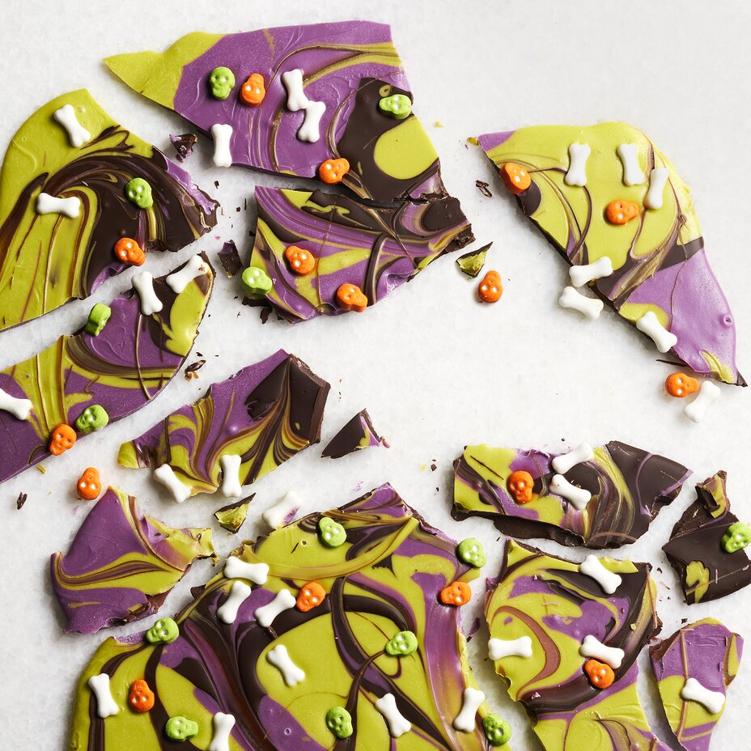

Halloween Bark

Description
Bark and Halloween? What is this, a spooky dog tree?
Today, it's chocolate I guess. And some of those
awful chalky candies that come out of vending machines.
Ingredients
- 2 (4 ounce) bars dark chocolate, chopped
- 1 (8 ounce) package purple candy melts
- 1 (8 ounce) package green candy melts
- Assorted sprinkles and candies
Steps
- Line a rimmed baking sheet with parchment paper.
- Divide dark chocolate, purple candy melts, and green candy melts between 3 microwave-safe bowls. Heat each separately for 1 minute, then stir. Continue heating in 30-second intervals, stirring after each interval, until completely melted.
- Pour contents of each bowl onto the pan in random spots; don't worry if they overlap. Shake pan to spread melted chocolate and candy. Use a knife to swirl colors together and shake pan again to spread even more. Sprinkle Halloween sprinkles and candy over chocolate mixture. Let set, about 15 minutes. Break into shards.
Conclusion
Does melting chocolate count as a recipe? On this site, you bet it does.